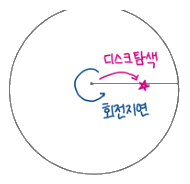
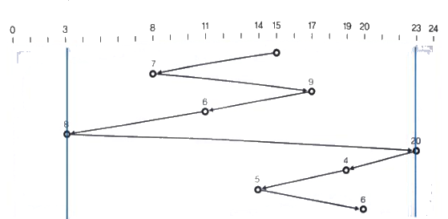
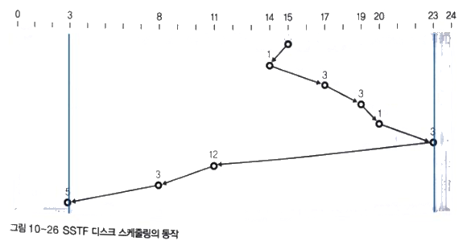
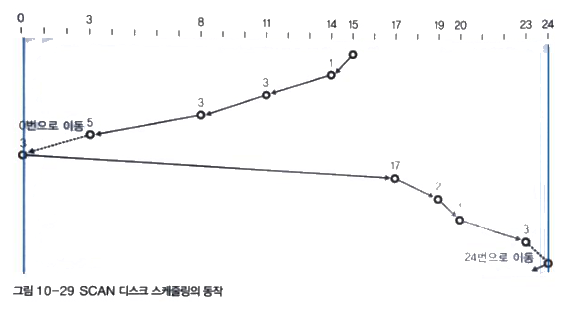
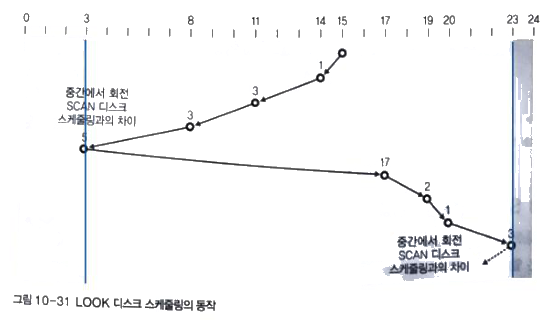
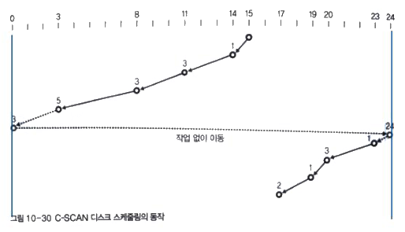
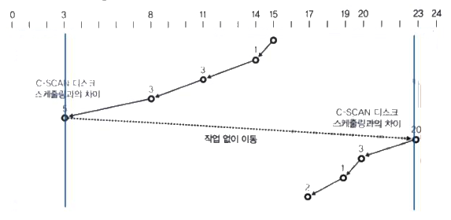

└보조기억장치의 종류 및 구조, 대용량기억장치(RAID)의 구조, 디스크 관리, 디스크 스케줄링 알고리즘
입출력 장치의 유형과 특성
저장장치의 개념
저장장치 : 저장 매체와 이 매체에 데이터를 저장하고 검색하기 위한 장치
종류 : 자기 테이프, 자기 디스크
데이터 전송 시간 = 헤드 활동 시간 (head activation time) + 탐색 시간 (seek time) + 회전 지연 시간 (rotational latency) + 전송 시간 (transfer time) 원본과 다름 · 원본: “탐구 시간 (seek time)”
3.5.2
입출력 기능의 발전
입출력 기능의 발전
아직 비어 있어요.
3.5.3
디스크 스케줄링
디스크 스케줄링
디스크 스케줄링
디스크 스케줄링 : 디스크에서 찾으려는 데이터가 여러 곳에 흩어져 있을 때, 헤드를 어떻게 움직이느냐를 결정
탐색, 회전 수 최적화 고려
디스크 접근 시간
디스크 탐색 시간 (disk seeking time) : access arm이 움직여서 정보가 저장된 트랙으로 이동하는 시간
회전 지연 시간 (latency time, rotational delay) : 해당 트랙에서 디스크 원판의 회전으로 원하는 섹터가 헤드의 바로 아래 위치할 때까지의 소비 시간
전송 시간 (transfer time) : 디스크 헤드를 통해 읽어 낸 정보를 주기억장치로 전송하는 시간

디스크 스케줄링 분류 기준 (스케줄링의 좋고 나쁨의 기준)
1. 처리율 (throughput) : 단위 시간에 디스크 헤드가 찾을 수 있는 데이터의 수 최대화
2. 평균 응답 시간 (mean response time) : 요청이 디스크에 전해질 때부터 결과가 나올 때까지의 시간의 평균값 (대기 시간 + 탐색 시간 + 회전 시간)
3. 응답 시간의 편차 (variance of response time) : 평균 반응 시간을 줄이고 이를 예측할 수 있도록 하는 것. 데이터 읽는 시간들의 차이가 작도록 하는 것
디스크 스케줄링 유형
FCFS (First Come First Served)
풀이할 때 확인할 것 : ① 트랙의 시작, 끝 ② 하나의 작업 큐에 다 있는지 ③ 헤드의 위치 ④ 진행 방향

SSTF (Shortest Seek Time First) : 탐색 거리가 짧은 순으로 스케줄링
바깥쪽에 있는 트랙이 서비스를 덜 받게 됨
처리율, 평균 응답 시간이 FCFS보다 향상
일괄 처리 시스템에는 유용하지만, 대화형 시스템에는 부적합

SCAN : 한 방향의 서비스들이 모두 수행될 때까지 그 방향으로 계속 진행, 서비스가 끝나면 방향을 바꿔 진행

LOOK : SCAN과 비슷, 끝까지 안 가고 마지막 트랙에서 방향 전환

C-SCAN : 바깥쪽 → 안쪽 → 바깥쪽

C-LOOK : C-SCAN과 비슷, 헤드 변경 시점에서 차이

N단계 SCAN : 헤드가 한쪽 방향으로 이동하면서 최초 요청을 서비스하다가 반대편으로 가면서 나중에 도착한 것 처리